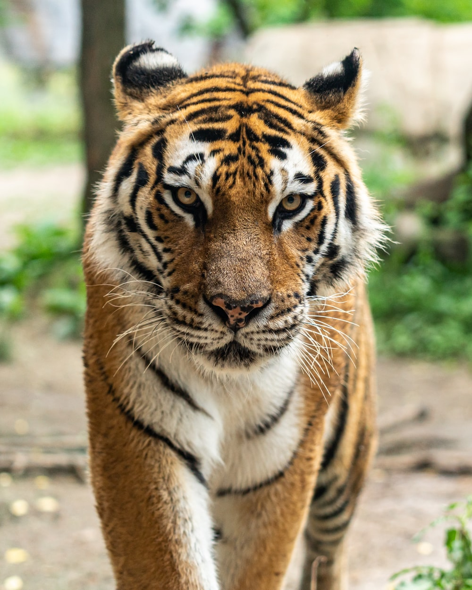

- 멋쟁이호랑이처럼
- 멋쟁이백호처럼
- 멋쟁이하이에나처럼
멋쟁이호랑이처럼
호랑이에 대해 궁금하다면? 눌러보세요

아시아[4]에 서식하는 식육목(食肉目) 고양잇과의 포유류. 현존하는 모든 고양잇과 동물들 중 가장 큰 동물로 수컷의 무게는 100~360 kg, 암컷의 무게는 70~200 kg 정도 나간다. 또한 IUCN 멸종 위기 등급 EN인 멸종 위기 종이기도 하다.
"호랑이"의 어원에는 여러 설이 있으나 범을 뜻하는 虎와 이리를 뜻하는 狼에 접미사가 붙어(虎+狼+이) 육식 맹수를 가리키던 것이 점차 범 대신 호랑이라고 부르게 된 것으로 본다. 불교 용어로는 대충(大蟲)[5]이라고 부른다. 중국 소설 수호지에는 '모대충(母大蟲)'이란 별명을 가진 고대수라는 여자 호걸이 등장하는데, 모대충이란 말도 '암호랑이'라는 뜻. 같은 작품에 등장하는 설영 역시 별명이 병대충(病大蟲 - 호랑이만큼이나 용맹한 자)이다.
한국에서는 순우리말로 범이라는 단어가 있고, 잘 발달되고 균형 잡힌 신체 구조와 느리게 움직이다가도 목표물을 향할 때의 빠른 몸놀림 그리고 빼어난 지혜와 늠름한 기품을 지녔다 하여 산군(山君), 산령 (山靈), 산신령(山神靈), 산중왕(山中王)으로 불렸다.
호랑이
호랑이